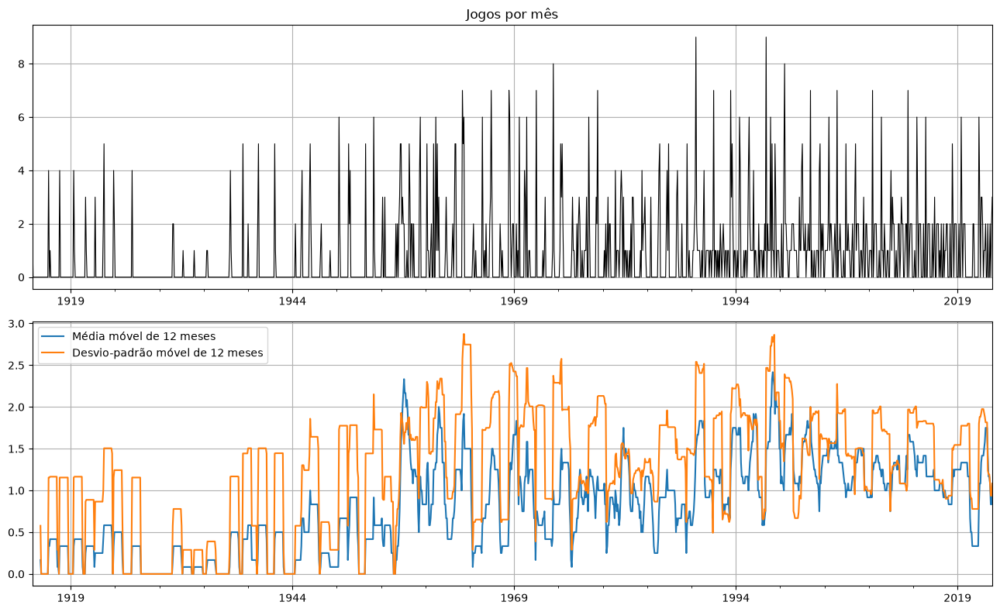
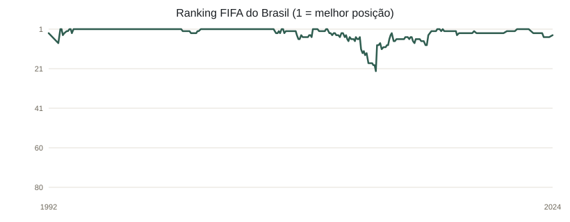
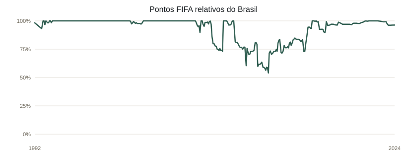
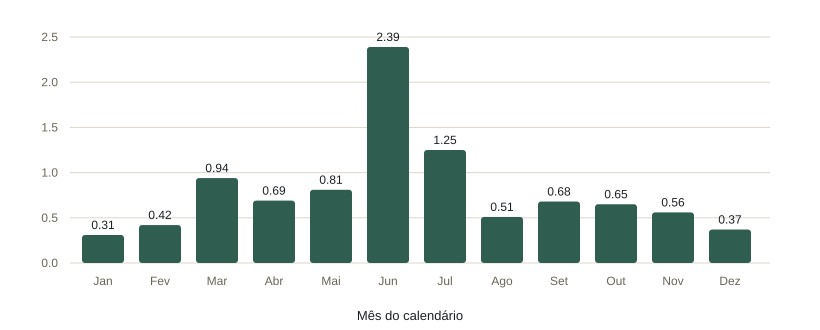
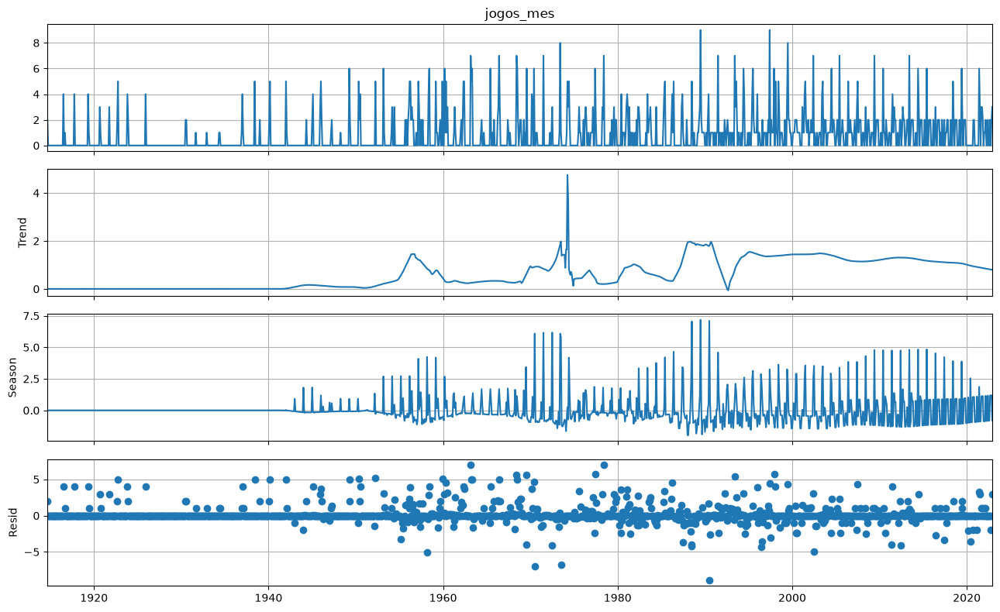
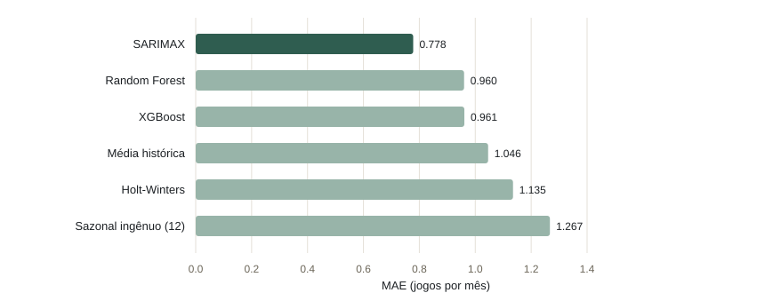
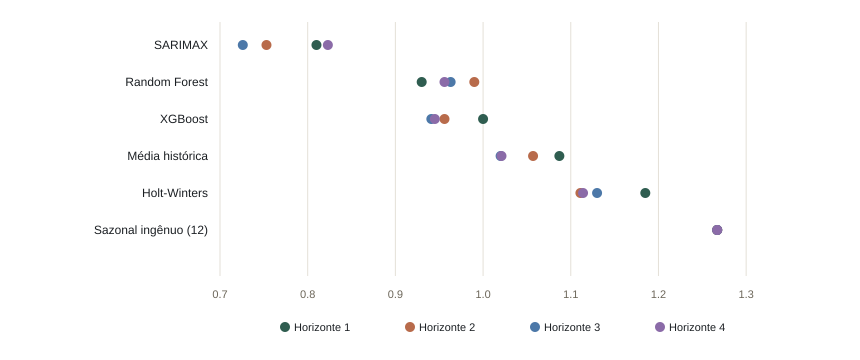
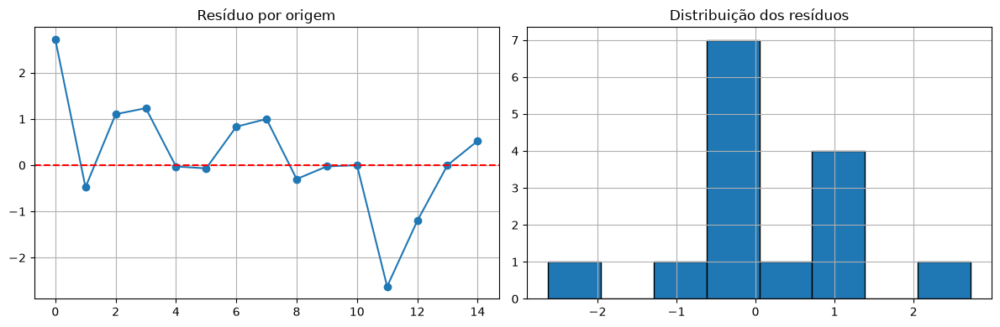
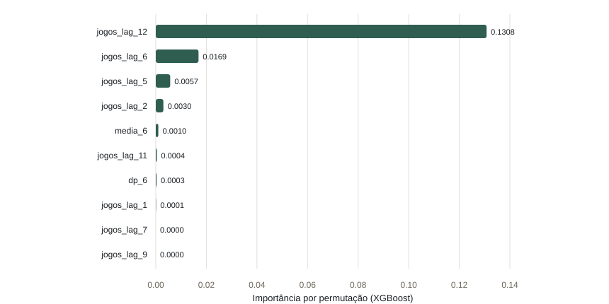

Base — número mensal de jogos da Seleção Brasileira
Ficha da base
| Fonte | brazil/dados/brazil.csv — histórico de partidas da Seleção Brasileira |
|---|---|
| Variável-alvo | jogos_mes — partidas disputadas por mês |
| Unidade e frequência | jogos por mês; mensal, início do mês |
| Período | setembro de 1914 a dezembro de 2022 |
| Registros brutos | 1.034 partidas |
| Série modelada | 1.300 meses; 859 meses sem partida foram representados por zero |
| Média e mediana | 0,795 jogo por mês; mediana 0 |
| Período comum da comparação | janeiro de 1993 a dezembro de 2022; 360 meses com cobertura do ranking FIFA |
| Protocolo comparativo | 15 origens walk-forward × 4 meses à frente = 60 previsões por modelo |
Série mensal e variação ao longo do tempo

Variáveis externas
Calendário e ranking FIFA
| Variável | Descrição | Disponível na origem? | VIF |
|---|---|---|---|
| sin_mes | Componente seno do mês do calendário | Sim; determinística | 1,0 |
| cos_mes | Componente cosseno do mês do calendário | Sim; determinística | 1,0 |
| rank_fifa_brasil | Posição do Brasil (1 = melhor), última publicação anterior ao mês-alvo | Sim; valor conhecido antes do mês previsto | 4,394 |
| pontos_fifa_relativos | Pontos do Brasil divididos pela pontuação máxima da mesma publicação | Sim; valor conhecido antes do mês previsto | 4,392 |
Fonte utilizada: FIFA World Ranking 1992–2024 (Kaggle), arquivo local fifa_ranking-2024-06-20.csv. Os outros dois CSVs na pasta são snapshots anteriores do mesmo histórico; não são variáveis independentes. A pontuação foi dividida pelo máximo da respectiva publicação para reduzir a quebra de escala do sistema de pontos.
Evolução das variáveis do Brasil no ranking FIFA


Limpeza e exploração
Diagnóstico do arquivo
| Verificação | Resultado | Tratamento |
|---|---|---|
| Campos ausentes | 1 Score e 1 Competition | Não afetam a contagem mensal |
| Linhas duplicadas | 0 | Nenhuma remoção necessária |
| Datas repetidas | 3 | Mantidas: podem representar partidas distintas no mesmo dia |
| Datas inválidas | 0 | Datas convertidas e ordenadas cronologicamente |
| Placares fora do padrão N-N | 16 | Placares não entram na variável-alvo |
Contagem média por mês do calendário
| Mês | Média | Mês | Média | Mês | Média |
|---|---|---|---|---|---|
| Jan | 0,31 | Mai | 0,81 | Set | 0,68 |
| Fev | 0,42 | Jun | 2,39 | Out | 0,65 |
| Mar | 0,94 | Jul | 1,25 | Nov | 0,56 |
| Abr | 0,69 | Ago | 0,51 | Dez | 0,37 |

Decomposição STL
Força dos componentes e estacionariedade
| Medida | Resultado do notebook |
|---|---|
| Força da sazonalidade | 0,2549 |
| Força da tendência | 0,0745 |
| ADF p-valor | 0,0043 |
| KPSS p-valor | 0,0100 |
ADF e KPSS levam a indicações diferentes sobre a estacionariedade; por isso, não são tratados como evidência conclusiva isoladamente. A ordem SARIMA foi selecionada na validação temporal.
Componentes da série

Feature engineering
| Família | Quantidade | Construção |
|---|---|---|
| Lags da série | 12 | Valores mensais defasados de 1 a 12 meses |
| Médias móveis | 4 | Janelas anteriores de 3, 6, 9 e 12 meses |
| Desvios móveis | 3 | Janelas anteriores de 3, 6 e 12 meses |
| Calendário | 11 | Indicadores dos meses de fevereiro a dezembro; janeiro é referência |
| Ranking FIFA | 2 | Posição e pontos relativos conhecidos na origem; congelados no horizonte futuro |
| Total | 32 | Features conhecidas na origem do mês-alvo |
Protocolo walk-forward
| Etapa | Configuração |
|---|---|
| Amostra comparável | Jan/1993–dez/2022; todos os modelos treinados e avaliados nesse mesmo recorte |
| Validação interna | Origens em jan/2020 e mai/2020; 4 passos por origem; usada para selecionar hiperparâmetros |
| Avaliação final | 15 origens mensais, de jun/2021 a ago/2022 |
| Horizonte | 4 meses à frente em cada origem |
| Datas previstas | jul/2021 a dez/2022 |
| Previsões avaliadas | 60 por modelo; previsões sobrepostas contam em horizontes diferentes |
| Atualização | Modelo reajustado em cada origem; ranking congelado no último valor disponível antes do primeiro mês previsto |
Modelos e hiperparâmetros
| Modelo | Busca e configuração selecionada | MAE validação |
|---|---|---|
| SARIMAX | Grade 3×3×3×3; d=0, D=1, m=12. SARIMAX(0,0,2)×(2,1,2,12), com seno/cosseno mensal e as duas variáveis FIFA | 0,937 |
| Holt-Winters | Tendência aditiva sem amortecimento; sem sazonalidade; inicialização heurística | 1,076 |
| Random Forest | ParameterSampler, 40 combinações; 500 árvores, max_depth=None, min_samples_split=2, min_samples_leaf=3, max_features=0,5 | 1,512 |
| XGBoost | Optuna/TPE, 60 trials; 100 árvores, profundidade 5, learning_rate≈0,0123, min_child_weight=20, objective=reg:absoluteerror | 1,106 |
A busca SARIMAX testa 81 configurações e seleciona pelo MAE interno entre as cinco com menor BIC. Random Forest e XGBoost usam as mesmas 32 features, com previsões recursivas; durante cada horizonte, as variáveis FIFA não são atualizadas com publicações futuras.
Resultados comparativos (MAE)
MAE global fora da amostra
| Posição | Modelo | MAE | N previsões |
|---|---|---|---|
| 1 | SARIMAX | 0,778 | 60 |
| 2 | Random Forest | 0,960 | 60 |
| 3 | XGBoost | 0,961 | 60 |
| 4 | Média histórica | 1,046 | 60 |
| 5 | Holt-Winters | 1,135 | 60 |
| 6 | Sazonal ingênuo (12) | 1,267 | 60 |

MAE por passo do horizonte
| Modelo | 1 mês | 2 meses | 3 meses | 4 meses |
|---|---|---|---|---|
| SARIMAX | 0,810 | 0,753 | 0,726 | 0,823 |
| Random Forest | 0,930 | 0,990 | 0,963 | 0,956 |
| XGBoost | 1,000 | 0,956 | 0,941 | 0,945 |
| Média histórica | 1,087 | 1,057 | 1,020 | 1,021 |
| Holt-Winters | 1,185 | 1,111 | 1,130 | 1,114 |
| Sazonal ingênuo (12) | 1,267 | 1,267 | 1,267 | 1,267 |

Resíduos e Ljung-Box
Resíduos de horizonte 1 do SARIMAX

| Lags | Estatística Q | p-valor | Leitura a 5% |
|---|---|---|---|
| 1 | 0,4576 | 0,4987 | Sem evidência de autocorrelação |
| 3 | 1,2213 | 0,7479 | Sem evidência de autocorrelação |
| 6 | 2,0726 | 0,9129 | Sem evidência de autocorrelação |
Modelo avaliado: SARIMAX. Resíduo médio: 0,179 jogo. Teste t para média dos resíduos igual a zero: p-valor=0,5737; não há evidência de viés médio a 5%.
Importância das features
Top 10 por importância de permutação

| Feature | Importância | Feature | Importância |
|---|---|---|---|
| jogos_lag_12 | 0,1308 | jogos_lag_6 | 0,0169 |
| jogos_lag_5 | 0,0057 | jogos_lag_2 | 0,0030 |
| media_6 | 0,0010 | jogos_lag_11 | 0,0004 |
| dp_6 | 0,0003 | jogos_lag_1 | 0,0001 |
| jogos_lag_7 | 0,0000 | jogos_lag_9 | 0,0000 |
Importância agregada por família
| Família | Importância agregada |
|---|---|
| Lags | 0,1560 |
| Janelas móveis | 0,0009 |
| Calendário mensal | 0,0000 |
| Ranking FIFA | 0,0000 |
Coeficientes SARIMAX: sin_mes=0,0000; cos_mes=0,0000; rank_fifa_brasil=0,0215; pontos_fifa_relativos=−0,2334. A importância por permutação do ranking ficou próxima de zero para o XGBoost nesta janela de validação.
Conclusão desta base
Melhor modelo nesta avaliação
SARIMAX obteve o menor MAE (0,778), seguido por Random Forest (0,960) e XGBoost (0,961), no conjunto de 60 previsões walk-forward por modelo. O MAE do SARIMAX foi 19,0% menor que o do segundo colocado e 25,6% menor que o da média histórica (1,046).
Limitações e decisão metodológica
A análise exploratória mantém o histórico completo de setembro/1914 a dezembro/2022. Como o ranking FIFA começa em 31/12/1992, o treinamento e a comparação usam apenas 360 meses de janeiro/1993 a dezembro/2022; 144 desses meses não tiveram partidas. As origens são consecutivas e os horizontes se sobrepõem, então as 60 previsões não são observações independentes.
O efeito adicional das variáveis FIFA não deve ser inferido apenas pelo ranking comparativo entre famílias de modelos: a importância por permutação no XGBoost foi praticamente nula. O ranking foi usado somente quando já publicado e congelado durante cada horizonte, evitando vazamento temporal.